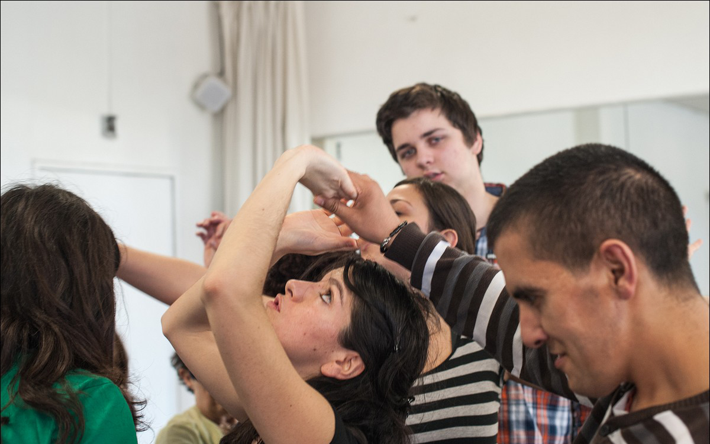
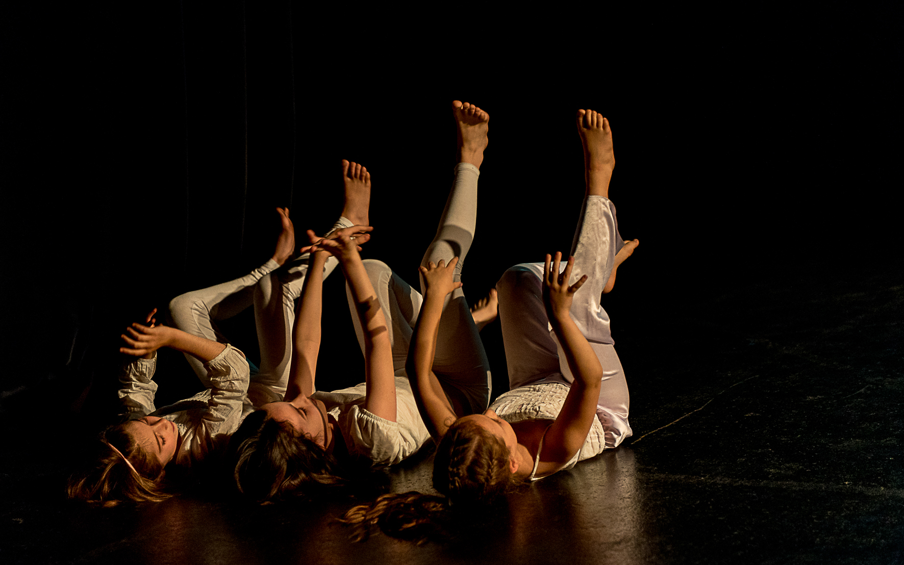
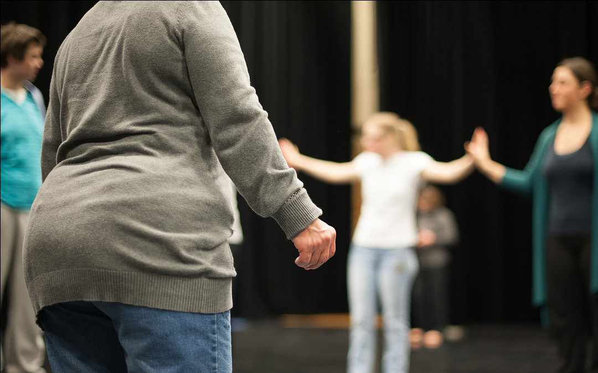
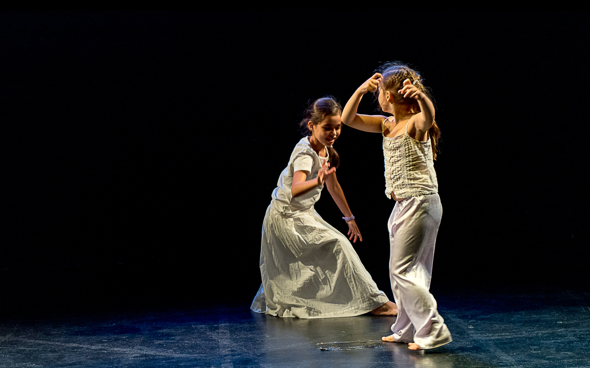

Artiste chorégraphique, pédagogue et Danse-Mouvement-Thérapeute Franco-bolivienne. Entre création et transmission, entre tradition et modernité, entre l’Amérique et l’Europe. Pour elle, la danse concerne et transforme profondément l’individu et l’acte créatif puise de son propre vécu, d’où l’importance de la rendre accessible au plus grand nombre.